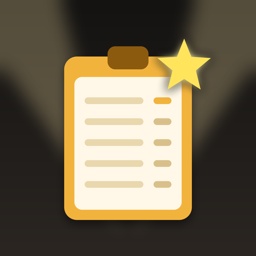

ScoreDeck
Calificación y puntaje de eventos en vivo, sin internet
En desarrollo
ScoreDeck convierte los iPhones y iPads de una competencia con jueces en un solo sistema de puntuación: los jueces califican en sus propios dispositivos, una consola maestra aprueba y una pantalla grande muestra la clasificación en vivo al público.
Hecha para eventos con jueces
- Competencias de BMX, skate, freestyle y dirt jump, gimnasia, baile o cualquier formato donde los jueces califican a competidores en varias categorías
- Juez: califica a cada competidor en un teclado sencillo, una categoría a la vez
- Maestro: revisa y aprueba puntajes, administra la lista y pasa a los mejores a una final
- Pantalla: una tabla de clasificación automática y rotativa para el público, general y por categoría
- Los dispositivos se sincronizan directamente por la red local: sin router, sin internet, sin cuenta
- Una bandera o foto para cada competidor, y el logo y el banner de tu evento en la pantalla de resultados